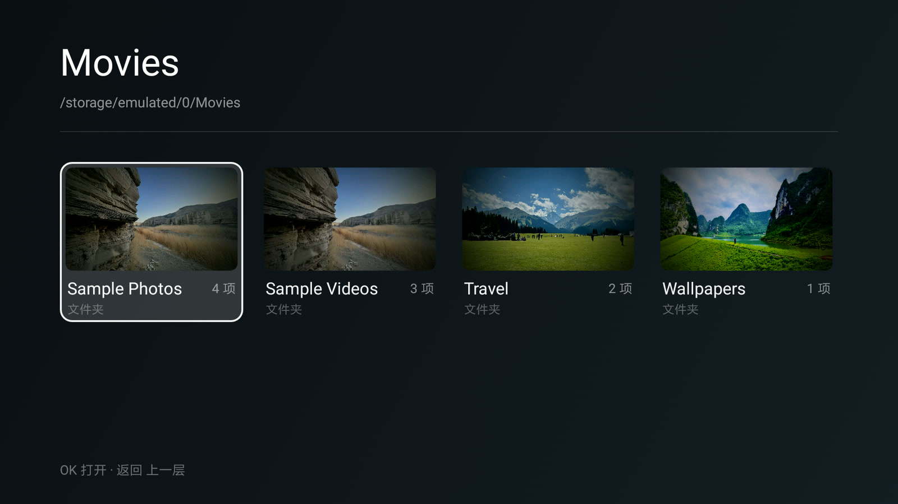
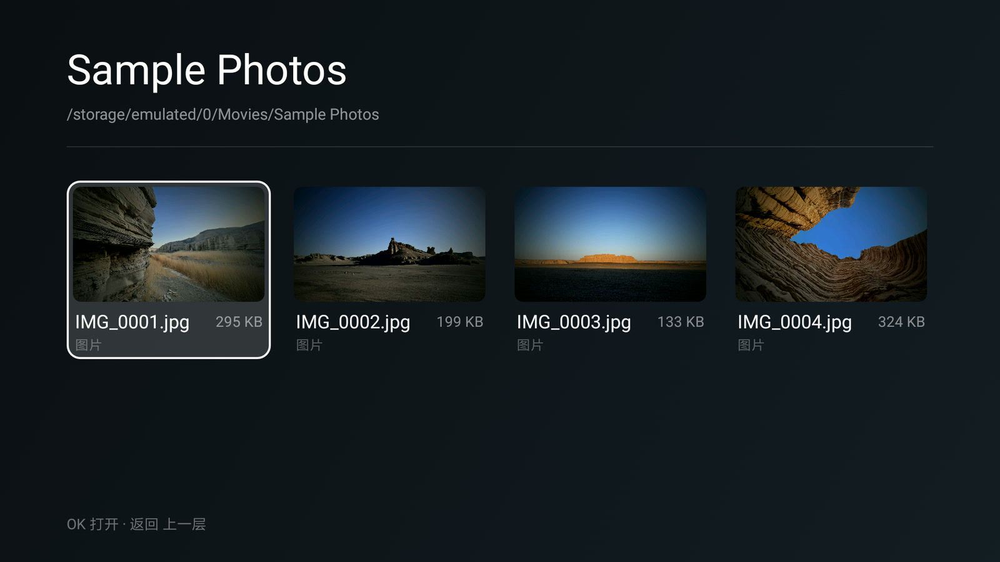
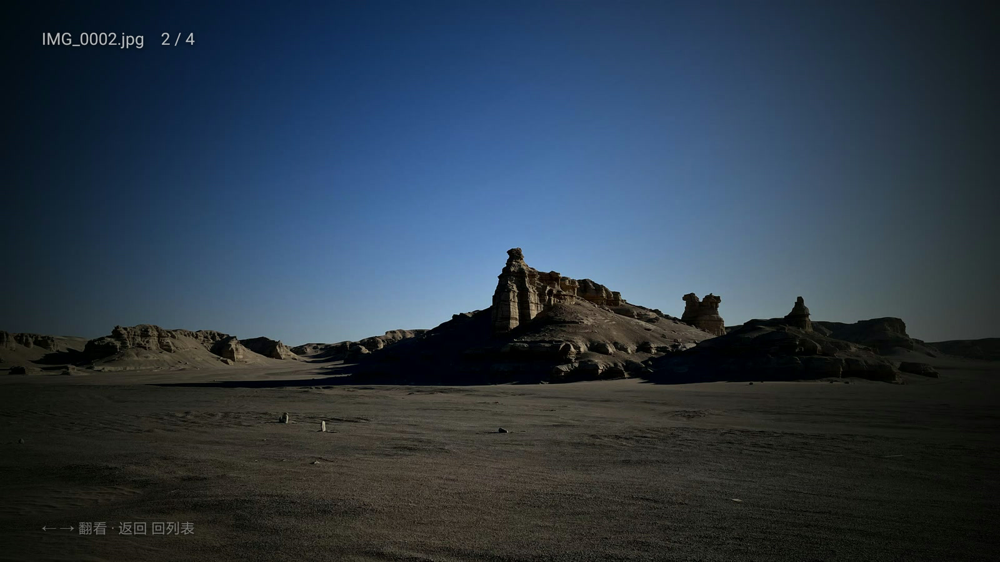
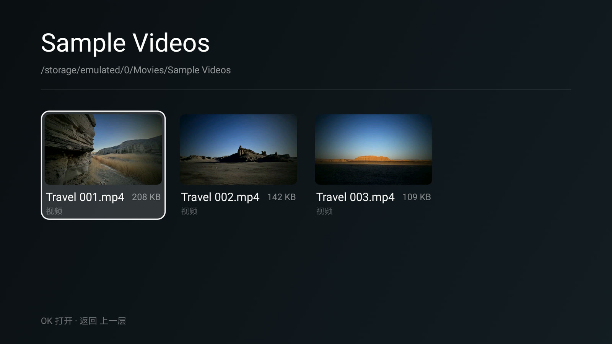
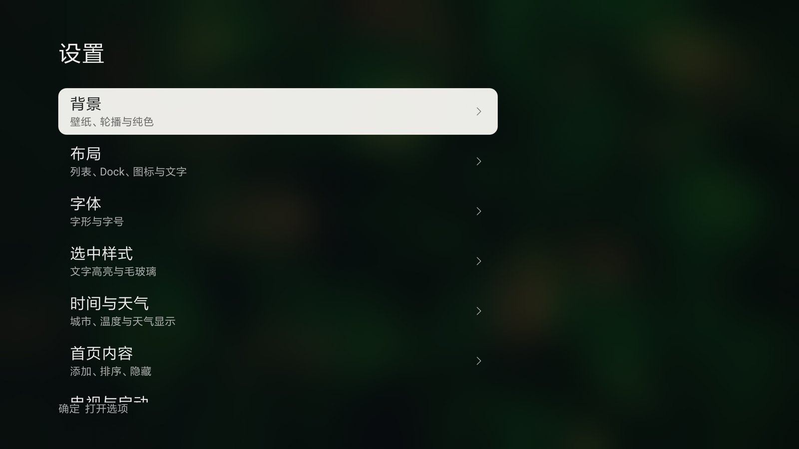
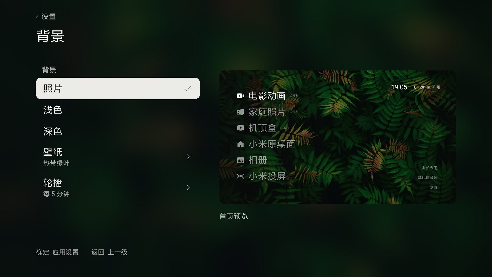

找不到硬盘
外接盘要先进「我的设备」，再进 U 盘，再一层层点文件夹。看到第三层，已经忘了刚才点的是哪块盘。
35 秒，配一段很轻的背景音乐。从开机第一屏走到目录、照片和设置。
机器还能用，屏幕也没坏，但每次想放个片子，得先穿过一层推荐位、一层会员推广、三四层菜单。片子明明就在插着的硬盘里，桌面却从来没打算让你直接够到它。
外接盘要先进「我的设备」，再进 U 盘，再一层层点文件夹。看到第三层，已经忘了刚才点的是哪块盘。
列表里全是文件名。IMG_20200911_142233.jpg 和一排同样的字，认不出哪张是孩子的照片。
桌面上那几个入口是系统写死的。想换一块盘、想加一个目录，只能忍着，或者换电视。
目录页用 16:9 的卡片铺开，视频取第一帧、照片取自身，缩略图生成后落盘缓存，第二次进来就是瞬开。

文件夹排前面，视频和图片按名字排。封面取自内容本身，一眼就能认出是《小猪佩奇》还是英语启蒙。
遥控器上下左右就能走完整个库，按下确认直接播——调用的是系统播放器，硬解、字幕、倍速都还是电视自己的那一套。
按目录聚成网格，点开全屏、左右翻页、显示序号。家庭相册不用再借手机投屏。
文件名之外还有时长与封面，一集动画和一部电影分得清。音频文件走独立播放器，不再黑屏。
右上角是时间、温度、天气与城市，数据来自 Open-Meteo，不要账号、不要 key。
导入本地照片会自动转 16:9、按 EXIF 摆正、剥掉定位信息。亮色壁纸会加深左侧渐变，白字不糊。



这一版把「入口」从一个写死的快捷方式，变成可以随手调整的东西：名字、图标、指向的目录、要不要出现在首页，都在遥控器上完成。
名字里带「电影／视频」是摄像机，带「照片／相册」是照片，其余是文件夹；HDMI 入口带「游戏」是手柄，带「Apple」是播放盒，其余是显示器。改过头了还能「恢复自动名称」。
「更换目录」和「添加文件夹」共用同一个目录浏览器：进到 U 盘里任意一层，按「选这个文件夹」就成。首页只看「动画」那一个目录，也摆得出来。
「添加」页现在会列出 HDMI 1／HDMI 2。接上机顶盒、游戏机或电脑，加一条入口再改名，点一下直接切信号源；不想要就隐藏，之后随时加回来。
只有一块外接盘都没插的时候，内部存储才会自动出现在首页。指向移动盘子目录的入口，按目录名显示，不再一律叫「移动存储」。


右侧那一栏不是装饰，是首页的实时预览。换壁纸、调布局、改字体，左边动一下，右边立刻就是最终的样子，不用退出去再看。
背景支持纯色、内置壁纸、自己的照片，以及每 5 分钟轮播。天气与城市在同一个页面的下一项。
本项目从 归藏 的 guizang-tv 分出来。设计语言、列表与 Dock 布局、设置分组都来自上游；这个分支做的是另一件事——让它在 2016 年的机器上装得上、跑得动，并且真的能当文件浏览器用。
| 能力 | 上游 guizang-tv | JK TV |
|---|---|---|
| 最低系统 | Android 8 / minSdk 26 | Android 6 / minSdk 23，含 Java 8 API 脱糖 |
| 首页入口 | 应用快捷方式 | 增加「文件夹」入口，可改名、换目录、换图标、隐藏 |
| 目录浏览 | — | 独立目录页：四列 16:9 网格，封面生成与落盘缓存 |
| 图片查看 | — | 全屏、左右翻页、序号 |
| 音频 | 交给视频播放器，画面全黑 | 独立音频播放器：文件名、进度、上下首 |
| 视频播放 | 通用 ACTION_VIEW | 小米私有 PLAY_URL + playInfo，固定系统播放器 |
| 天气 | 实时天气 | 今日高低温 + 未来三天，TLS 兼容性重试 |
| 壁纸 | 内置 5 张 + 轮播 | 十二张；支持导入本地照片并自动处理 |
| 开机自启 | — | start_3rd_app + 极轻量启动判断 |
签名从 0.4.0 起没变过，覆盖安装就行，设置和壁纸都留着，不需要卸载。
把 APK 拷到 U 盘，插电视，用系统自带的文件管理器点开它。装完按 Home 键选 JK TV。
电视开 ADB 调试，同一局域网里一条命令。小米／红米要先在「账号与安全」里打开 ADB 调试。
仓库是标准 Android 工程，JDK 17 + SDK 34，gradle :app:assembleRelease 即可。
# 下载最新 APK curl -LO https://github.com/Jkcode8/jktv/releases/latest/download/JKTV-0.4.3.apk # 电视上先开 ADB 调试，然后 adb connect 电视IP:5555 adb install -r JKTV-0.4.3.apk
com.xiaomi.mitv.tvplayer 的 ExternalSourceActivity。其他品牌不列点了没反应的入口。下面这些是按「用起来最疼」排的，不是路线图承诺。有想优先看到的，去 Issues 里说一声。